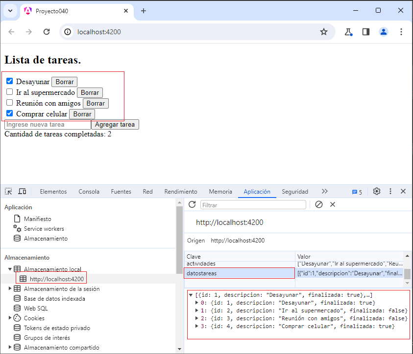

El decorador @Injectable se utiliza para marcar una clase como un servicio inyectable. Cuando un servicio es inyectable, significa que puede ser incluido en la lista de dependencias y Angular puede proporcionar instancias de ese servicio a otras clases mediante la inyección de dependencias.
Angular utiliza un sistema de inyección de dependencias para gestionar las dependencias entre diferentes partes de una aplicación. Esto permite la creación de instancias de clases y su provisión a otras clases que las necesitan.
Se aplica el decorador @Injectable a la clase del servicio que se desea inyectar. Este decorador no requiere ninguna configuración adicional y se coloca en la parte superior de la declaración de la clase.
import { Injectable } from '@angular/core';
@Injectable({
providedIn: 'root',
})
export class MiServicio {
// Métodos y propiedades del servicio
}
@Injectable está configurado con { providedIn: 'root' } Esto significa que Angular proporcionará una única instancia de MiServicio en toda la aplicación (En ningún momento nosotros debemos instanciar la clase MiServicio)
Vamos a resolver el mismo problema que el concepto anterior, pero vamos a almacenar las tareas en el localStorage.
Recordemos el problema: crear una aplicación que permita registrar tareas que se deben desarrollar y mediante controles checkbox tildar las ya realizadas, informando en la parte inferior cuantas de dichas tareas han sido finalizadas hasta dicho momento.
Crear dos componentes, una llamada ListaTareas que muestre todas las tareas, permita ingresar nuevas tareas e informe las tareas finalizadas y por otro lado una componente llamada Tarea que tenga por objetivo mostrar una tarea, poder indicar que ya ha sido realizada e informar a la componente padre cada vez que cambia el estado de la tarea.
La interfaz visual es similar a:
Podemos probar esta aplicación también en la web aquí.
Crearemos primero el proyecto
ng new proyecto040
Creamos el modelo de dato que representa una tarea mediante una 'interface':
ng generate interface tarea
Se nos crea el archivo 'tarea.ts' donde definimos la interface:
export interface Tarea {
id: number,
descripcion: string,
finalizada: boolean
}
Por cada tarea guardaremos su identificador, descripción y si la tarea fue finalizada.
Crearemos ahora el servicio que nos va a permitir almacenar, recuperar y modificar las tareas en el localStorage del navegador:
ng generate service tareas
Procedemos a crear la lógica del servicio:
tareas.service.ts
import { Injectable } from '@angular/core';
import { Tarea } from './tarea';
@Injectable({
providedIn: 'root',
})
export class TareaService {
private localStorageKey = 'datostareas';
obtenerTareas(): Tarea[] {
const tareasStr = localStorage.getItem(this.localStorageKey);
return tareasStr ? JSON.parse(tareasStr) : [];
}
guardarTareas(tareas: Tarea[]): void {
localStorage.setItem(this.localStorageKey, JSON.stringify(tareas));
}
agregarTarea(nuevaTarea: Tarea): void {
const tareas = this.obtenerTareas();
tareas.push(nuevaTarea);
this.guardarTareas(tareas);
}
borrarTarea(tareaId: number): void {
const tareas = this.obtenerTareas().filter(tarea => tarea.id !== tareaId);
this.guardarTareas(tareas);
}
}
Pasemos a crear ahora la componente "Tarea":
ng generate component tarea
Se nos crea una carpeta con los 4 archivos que representan la componente, procedemos a modificar la clase propiamente dicha y la plantilla HTML.
tarea.component.ts
import { Component, Input, Output, EventEmitter } from '@angular/core';
import { Tarea } from '../tarea';
@Component({
selector: 'app-tarea',
imports: [],
templateUrl: './tarea.component.html',
styleUrl: './tarea.component.css'
})
export class TareaComponent {
@Input() tarea: Tarea = { id: 0, descripcion: '', finalizada: false };
@Output() borrarTarea: EventEmitter<number> = new EventEmitter<number>();
@Output() actualizarFinalizada: EventEmitter<Tarea> = new EventEmitter<Tarea>();
cambiarEstado() {
this.tarea.finalizada = !this.tarea.finalizada;
console.log(" mi")
this.actualizarFinalizada.emit(this.tarea);
}
borrar() {
this.borrarTarea.emit(this.tarea.id);
}
}
La plantilla HTML para 'TareaComponent' es:
<div>
<input type="checkbox" [checked]="tarea.finalizada" (change)="cambiarEstado()">
{{ tarea.descripcion }}
<button (click)="borrar()">Borrar</button>
</div>
Pasemos a crear ahora la componente "listatareas":
ng generate component listatareas
Se nos crea una carpeta con los 4 archivos que representan la componente, procedemos a modificar la clase propiamente dicha y la plantilla HTML.
listatareas.component.ts
import { Component } from '@angular/core';
import { Tarea } from '../tarea';
import { TareaComponent } from '../tarea/tarea.component';
import { FormsModule } from '@angular/forms';
import { TareaService } from '../tareas.service';
@Component({
selector: 'app-listatareas',
imports: [TareaComponent, FormsModule],
templateUrl: './listatareas.component.html',
styleUrl: './listatareas.component.css'
})
export class ListatareasComponent {
tareas: Tarea[] = [];
descripcionTarea: string = '';
constructor(private tareaService: TareaService) {
this.tareas = this.tareaService.obtenerTareas();
}
agregarTarea() {
let nuevaTarea: Tarea;
if (this.tareas.length == 0) {
nuevaTarea = { id: 1, descripcion: this.descripcionTarea, finalizada: false };
} else {
nuevaTarea = { id: this.tareas[this.tareas.length - 1].id + 1, descripcion: this.descripcionTarea, finalizada: false };
}
this.tareas.push(nuevaTarea);
this.tareaService.agregarTarea(nuevaTarea);
this.descripcionTarea = '';
}
borrarTarea(tareaId: number) {
this.tareas = this.tareas.filter(tarea => tarea.id !== tareaId);
this.tareaService.borrarTarea(tareaId);
}
actualizarFinalizada(tarea: Tarea) {
this.tareas = this.tareas.map(ta => ta.id === tarea.id ? tarea : ta)
this.tareaService.guardarTareas(this.tareas);
}
cantidadTareasCompletadas(): number {
return this.tareas.filter(tarea => tarea.finalizada).length;
}
}
La plantilla HTML para 'ListatareasComponent' es:
<div>
<h2>Lista de tareas.</h2>
@for(tarea of tareas; track tarea.id) {
<app-tarea [tarea]="tarea" (borrarTarea)="borrarTarea($event)"
(actualizarFinalizada)="actualizarFinalizada(tarea)"></app-tarea>
}
<div>
<input [(ngModel)]="descripcionTarea" placeholder="Ingrese nueva tarea">
<button (click)="agregarTarea()">Agregar tarea</button>
</div>
</div>
<div>
Cantidad de tareas completadas: {{ cantidadTareasCompletadas() }}
</div>
Por último debemos modificar la componente que crea Angular por defecto, donde agregaremos la lista de tareas:
appcomponent.component.ts
import { Component } from '@angular/core';
import { RouterOutlet } from '@angular/router';
import { ListatareasComponent } from './listatareas/listatareas.component';
@Component({
selector: 'app-root',
imports: [RouterOutlet, ListatareasComponent],
templateUrl: './app.component.html',
styleUrls: ['./app.component.css']
})
export class AppComponent {
}
La plantilla HTML para 'AppComponent' es:
<app-listatareas></app-listatareas> <router-outlet />
Incluimos la componente ListatareasComponent en la plantilla HTML mediante la etiqueta app-listatareas que se encuentra definida en la propidad select del decorador de la clase 'ListatareasComponent'.
Ahora podemos ejecutar la aplicación:
ng serve -o
Podemos ver el localStorage con los datos de las tareas registradas hasta ese momento:
Podemos probar esta aplicación también en la web aquí.